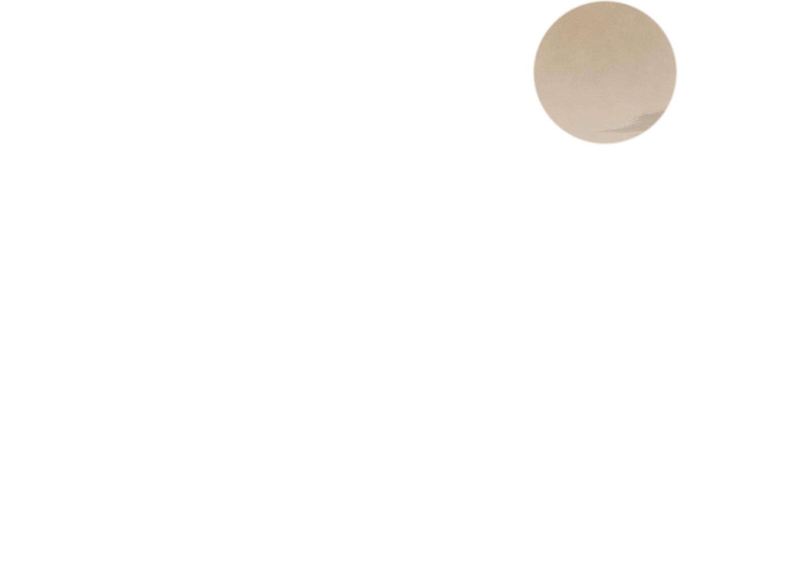
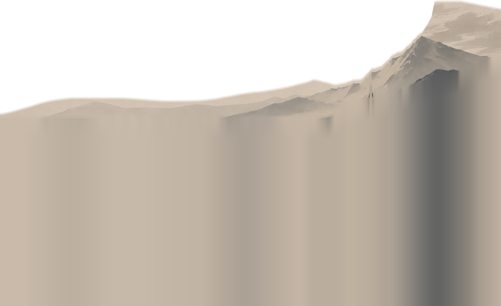
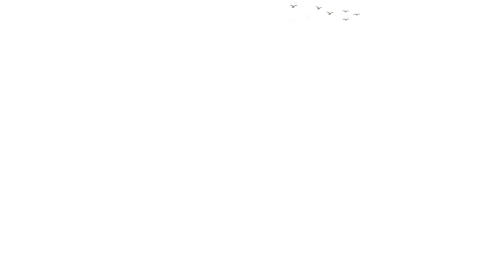
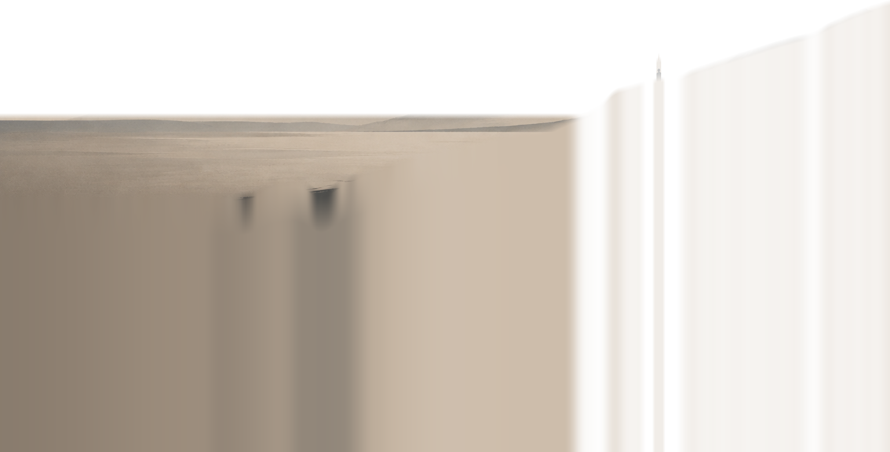
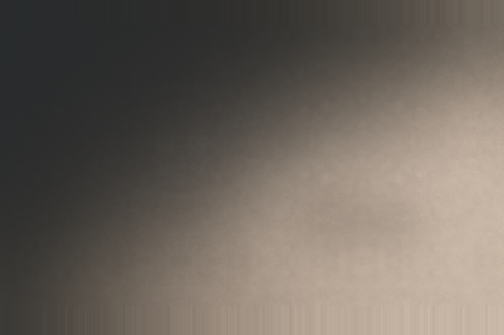
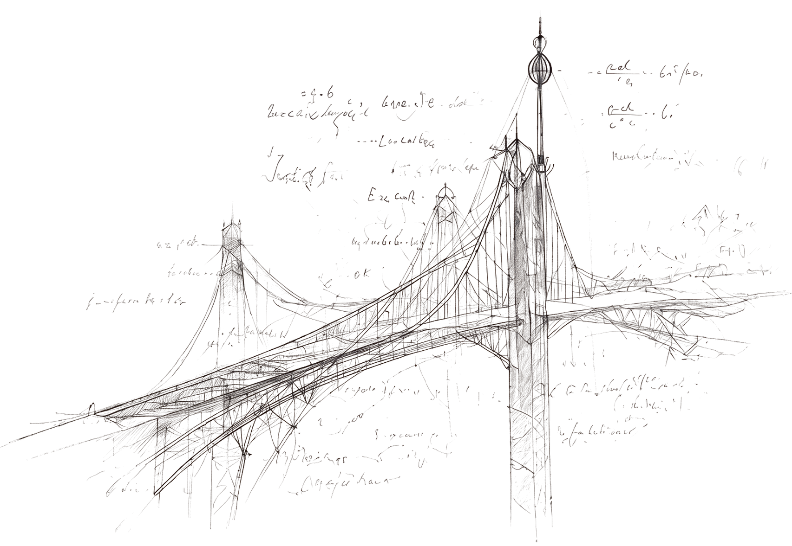
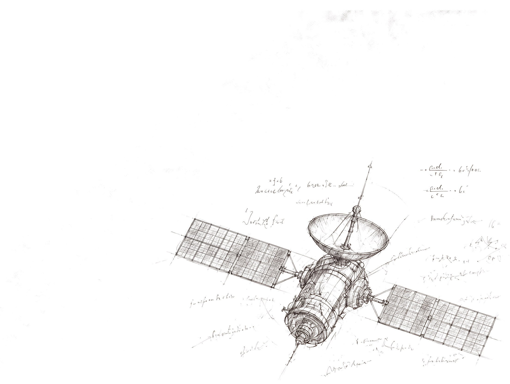
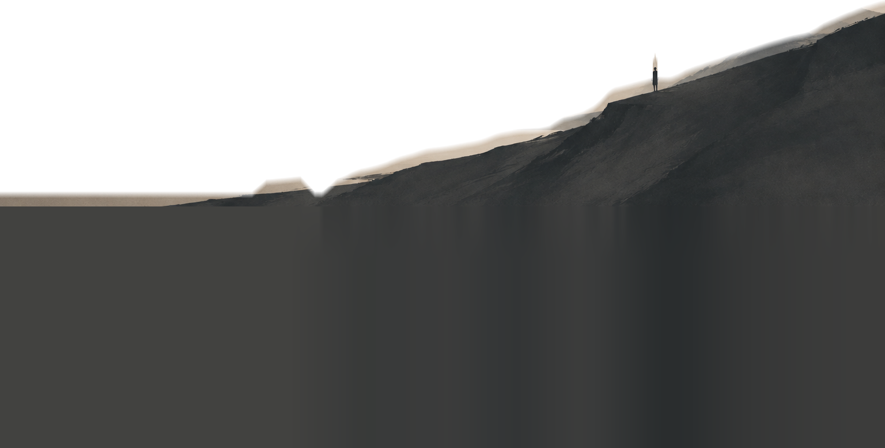

Theoretical Physics, Philosophy, Economics,
Neuroscience, Computation and everything
under the sun interests me
Motivated by human ingenuity, excited
by technology, and optimistic
about the future